Manual de usuario de Inventario Pro
Versión 1.0.0. Este manual explica, paso a paso, cómo usar el programa en el día a día de la tienda.
1. Antes de empezar
Inventario Pro lleva el inventario, las ventas, la caja, las compras y los clientes de una tienda. Funciona
sin internet: todo se guarda en el computador, en la carpeta de datos del usuario de Windows
(%LOCALAPPDATA%\InventarioPro), no en la carpeta del programa. Desinstalar el programa no borra
los datos.
- Nada se borra. Los productos, clientes o usuarios que ya no se usan se desactivan. Las ventas y los movimientos quedan para siempre; un error se corrige con un registro nuevo (por ejemplo, una devolución o un ajuste).
- Todo queda anotado. El programa registra quién hizo cada operación importante y cuándo.
- Cada usuario ve lo suyo. Un cajero no ve lo mismo que el administrador (sección 16).
- El recibo no es factura electrónica. Si la tienda debe facturar electrónicamente, consulte con su contador.
2. Instalar y activar
- Descargue el instalador desde la página de Inventario Pro y ábralo.
- Si Windows muestra «Windows protegió su PC», pulse «Más información» y después «Ejecutar de todas formas». Siga el instalador (siguiente, siguiente, instalar).
- Abra Inventario Pro desde el acceso directo del escritorio o del menú Inicio.
La primera vez aparece la pantalla de activación. Cada computador necesita su propia licencia:
- Escriba su nombre y el de la tienda y pulse «Crear solicitud».
- Pulse «Copiar solicitud» (o «Guardar en un archivo») y envíela a su distribuidor por WhatsApp o correo.
- Cuando reciba la licencia, péguela en el recuadro 3 (o abra el archivo) y pulse «Activar».
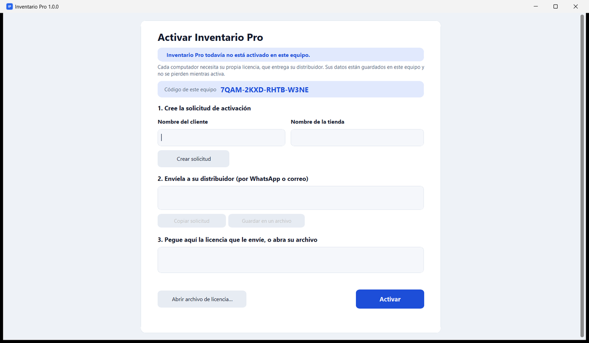
Si la licencia vence, el programa avisa con tiempo y da unos días de gracia para renovarla.
3. Crear la tienda
Después de activar, el asistente pide el nombre de la tienda y crea el primer usuario, que será el administrador. Elija una contraseña que no olvide (al menos 8 caracteres, con letras y números) y anótela en un lugar seguro.
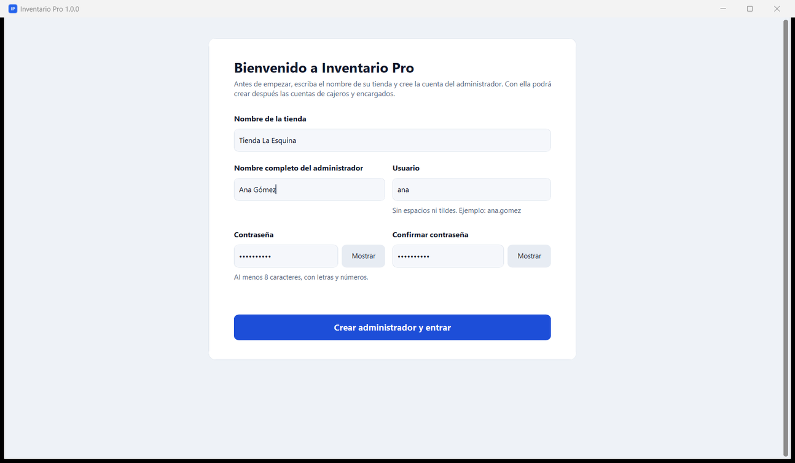
4. Entrar y salir
Cada persona entra con su usuario y su contraseña. Después de varios intentos fallidos, la cuenta se bloquea unos minutos; el administrador puede desbloquearla antes.
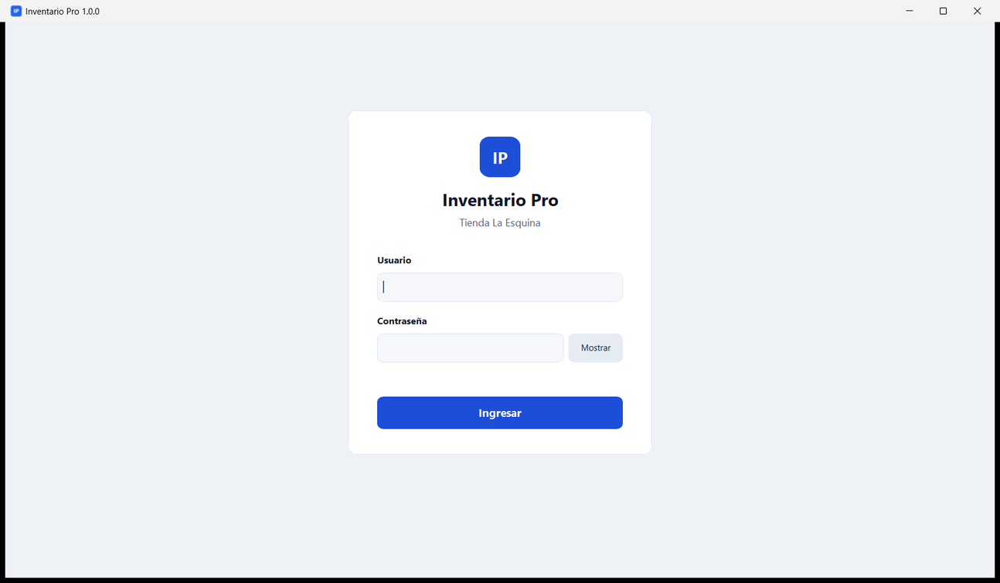
- Bloqueo por inactividad: si nadie usa el programa un rato (15 minutos de fábrica), la pantalla se bloquea y pide la contraseña. Lo que estaba haciendo no se pierde.
- Cambiar su contraseña: pulse su nombre, arriba a la derecha → «Cambiar mi contraseña».
- Bloquear la pantalla al alejarse: su nombre → «Bloquear la sesión».
- Salir: el botón de salida, arriba a la derecha, cierra la sesión.
- Cerrar el programa: con la ✕ de la ventana. Antes de cerrar se hace una copia de seguridad (sección 15).
5. El tablero
Es la primera pantalla. Muestra las ventas e ingresos del día, la ganancia estimada, las compras del mes, el valor del inventario, los productos con stock bajo y agotados, gráficos de ventas por día, semana y mes, los más vendidos, las existencias críticas y los últimos movimientos. Al pulsar una tarjeta se abre su módulo, y los botones de arriba son accesos rápidos.
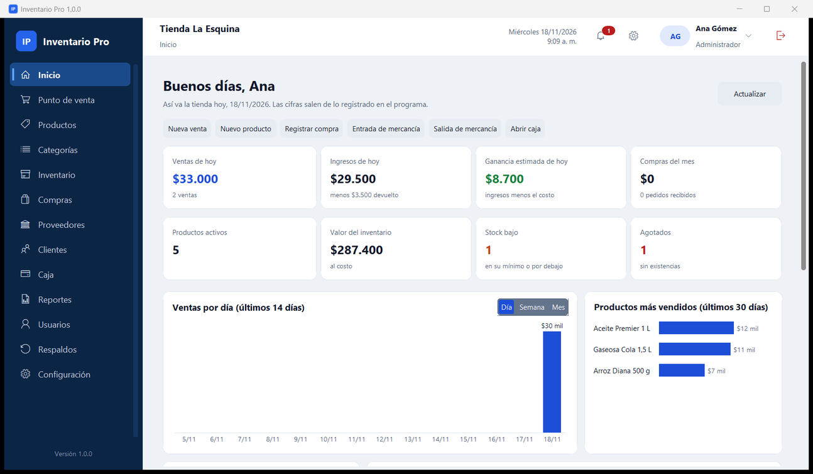
6. Productos
Menú Productos. La lista se puede buscar por nombre (sin importar tildes ni mayúsculas), SKU o código de barras, y filtrar por categoría o por «Solo stock bajo». Al elegir un producto se ve su ficha a la derecha.

Crear un producto
- Pulse «Nuevo producto».
- Escriba el nombre y, si tiene, el código de barras (puede escanearlo con el lector). El SKU es un código interno; si lo deja vacío, el programa propone uno.
- Escriba el costo y el precio de venta. El programa muestra la ganancia y puede sugerir el precio según la ganancia configurada.
- Elija la categoría, la unidad (unidad, kilo, libra…), el impuesto, la existencia inicial y el mínimo (para avisarle cuando quede poco). Si quiere, agregue una foto.
- Pulse «Guardar».
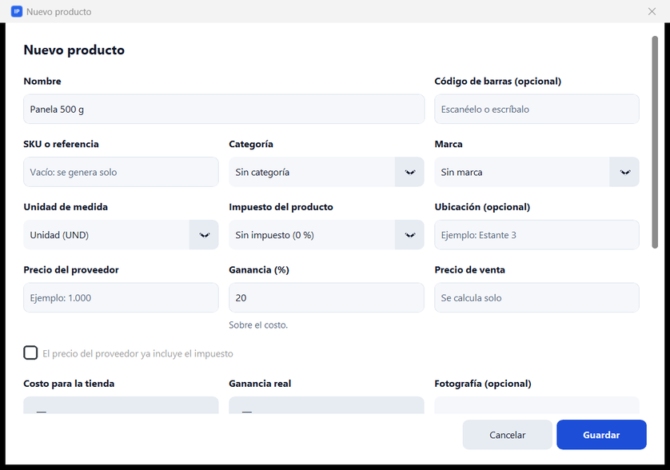
Editar cambia los datos; las existencias no se cambian aquí sino en Inventario. Desactivar lo saca de la venta sin borrar su historial. Importar carga muchos productos desde un archivo de Excel o CSV (el programa revisa cada fila antes de guardar y dice qué corregir).
7. Categorías y marcas
Menú Categorías. Las categorías pueden agruparse en dos niveles, por ejemplo «Abarrotes › Granos y cereales». Al crear una categoría, en «Pertenece al grupo» elija el grupo (o ninguno). En los reportes, elegir un grupo incluye sus subcategorías. La pestaña Marcas funciona igual.
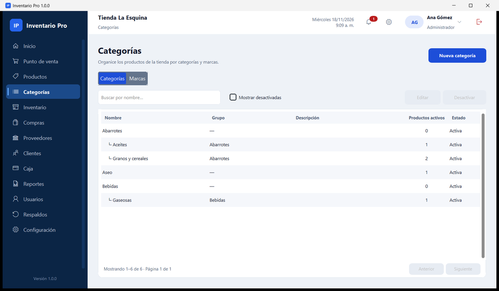
8. Inventario
Menú Inventario. Las existencias solo cambian con un movimiento: las ventas, las compras y las devoluciones los hacen solos. A mano:
- Entrada: llegó mercancía sin pedido (por ejemplo, un regalo del proveedor).
- Salida: mercancía que sale sin venderse (consumo de la tienda, vencida, dañada).
- Ajuste: corrige una diferencia (exige permiso de supervisor o administrador).
- Conteos físicos: cuente lo que hay en el estante y el programa calcula y aplica las diferencias.
- Movimientos: el kardex, todos los movimientos de un producto con quién y cuándo.
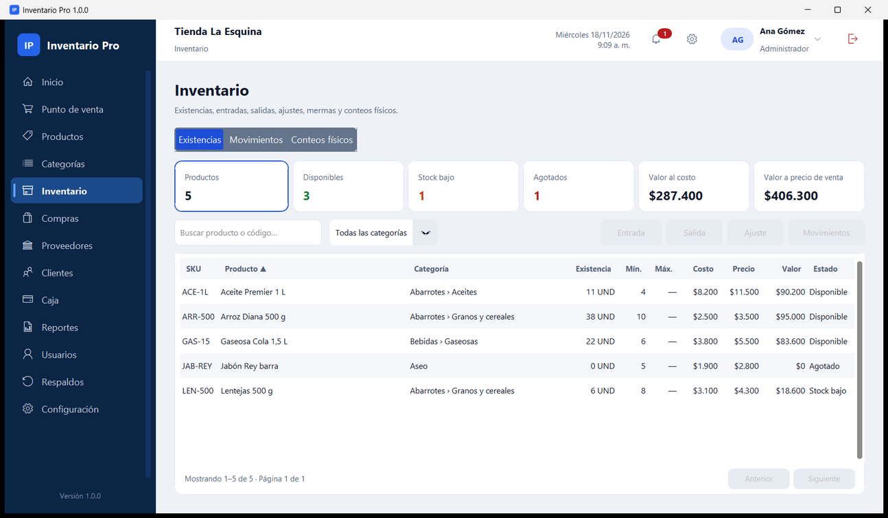
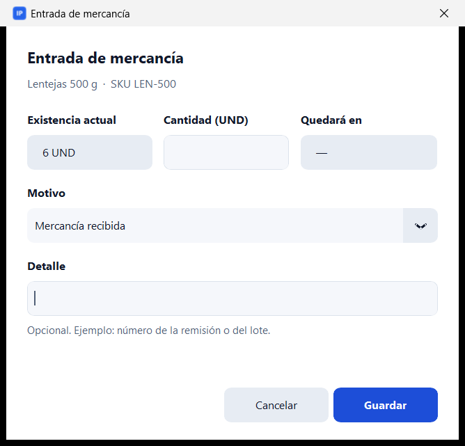
9. La caja
Para vender, la caja debe estar abierta. Menú Caja:
- «Abrir caja»: escriba con cuánto efectivo empieza (la base).
- Durante el día: gastos (pagar algo con el efectivo de la caja), retiros (sacar dinero) e ingresos (meter dinero). Las ventas en efectivo se suman solas.
- «Cerrar caja»: cuente el efectivo y escríbalo. El programa dice cuánto debería haber y la diferencia (sobrante o faltante). Quien ve los costos ve también la ganancia del turno: las ventas menos las devoluciones y el costo de lo vendido (la misma cuenta del tablero y los reportes).

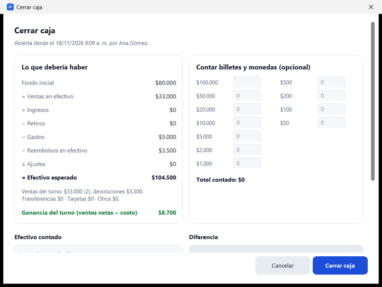
Cuentas de cobro: si los clientes pagan por el Nequi de una persona, cree esa cuenta en Configuración → Ventas. En Caja → Cuentas de cobro se ve cuánto recibió cada persona y cuánto debe entregar a la tienda; con «Registrar entrega» se anota lo que entregó.
10. Vender
Menú Punto de venta → Vender.
- Agregue los productos: escanee el código de barras o escriba parte del nombre y pulse Enter. Escanear el mismo producto otra vez suma una unidad.
- Cantidades: «Cambiar cantidad» (o doble clic en la línea). Los productos por peso piden kilos o libras.
- Descuento (opcional): en pesos o en porcentaje. Si el cajero no tiene permiso, lo autoriza un supervisor con su usuario y contraseña.
- Cliente (opcional): «Elegir» junto a «Cliente». Si no elige, la venta es de mostrador.
- Cobrar: pulse F12 o «Cobrar». Escriba lo que entrega el cliente; puede dividir el pago entre efectivo, Nequi o tarjeta. El programa calcula el cambio.
- En «Venta registrada» pulse «Imprimir recibo» (si hay impresora) o «Recibo (PDF)», y Enter para la venta siguiente.

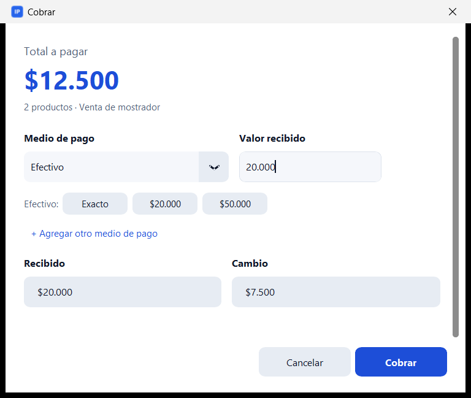
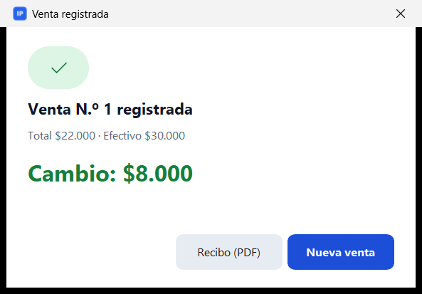
Ventas registradas muestra las ventas del día, la semana o el mes, con sus totales; al abrir una se ve su detalle y se puede imprimir otra vez el recibo. Una venta registrada no se borra ni se cambia: si hubo un error, se hace una devolución.
11. Devoluciones
- Punto de venta → Devoluciones: escriba el número de la venta (está en el recibo) y pulse Enter. También se puede pulsar «Devolver productos» en el detalle de una venta.
- Escriba cuánto devuelve de cada producto y, si vienen dañados, cuántos (esos no vuelven al inventario).
- Elija el motivo y por dónde se devuelve el dinero (el programa propone el medio con que pagó el cliente).
- «Registrar devolución» y confirme. El programa dice cuánto devolver y ofrece el comprobante.
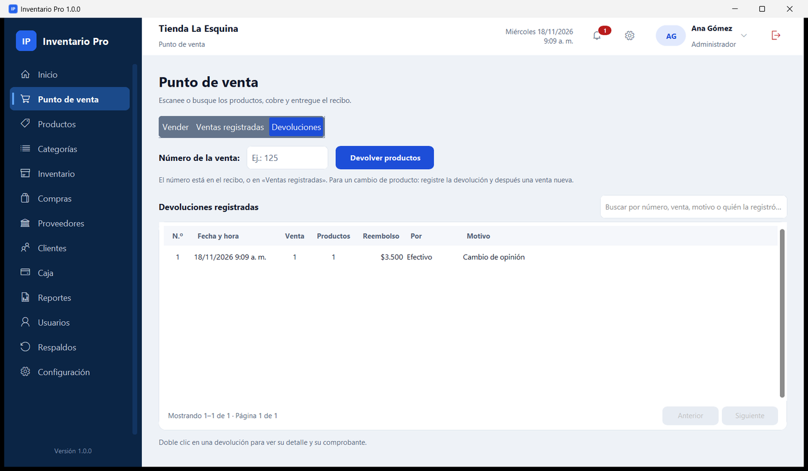
Un cambio de producto se hace con una devolución y una venta nueva.
12. Compras y proveedores
Menú Proveedores: cree sus proveedores con sus datos; en «Productos» anote qué le compra a cada uno. Menú Compras:
- «Nuevo pedido»: elija el proveedor, los productos, las cantidades y el precio, y si quiere la fecha en que llega. El día anterior el programa se lo recuerda al entrar.
- Cuando llegue, elija el pedido y pulse «Recibir»: escriba lo que llegó de cada producto. Lo que faltó se cancela o pasa al próximo pedido. Puede cambiar el precio de venta (el programa sugiere uno) y marcar si se pagó con el efectivo de la caja.
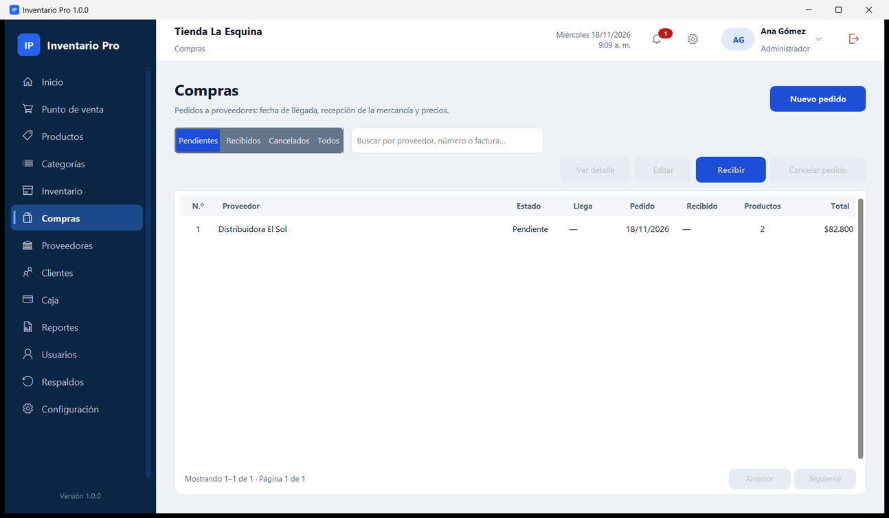
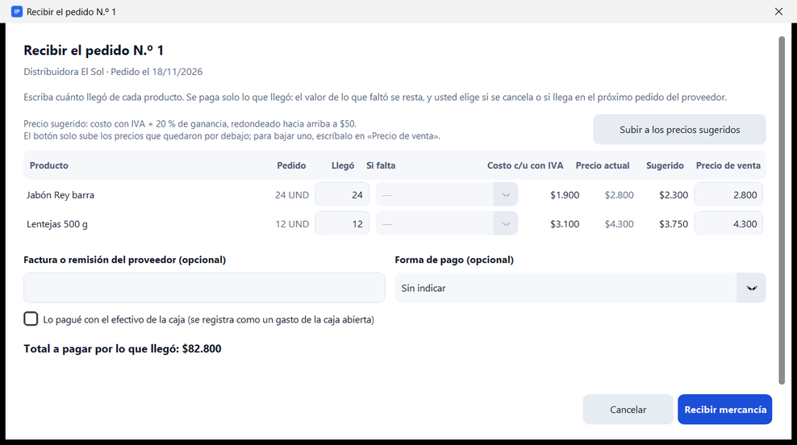
Al recibir, la mercancía entra al inventario y el costo del producto se actualiza (costo promedio).
13. Clientes
Menú Clientes: nombre (obligatorio), documento, teléfono, correo y dirección. «Compras» muestra lo que ha comprado cada cliente. Los datos personales solo los ven quienes tienen permiso.
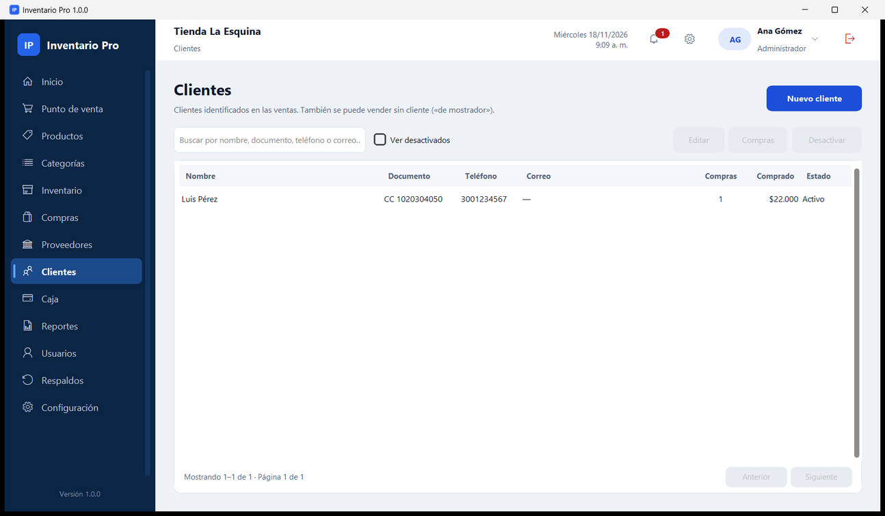
14. Reportes
Menú Reportes. Elija el grupo (Ventas, Inventario, Compras, Caja o Rentabilidad), el reporte y los filtros (período, producto, categoría, proveedor…), y pulse «Ver reporte». Con los botones Excel, CSV y PDF se guarda: Windows pregunta dónde y después se abre el archivo.
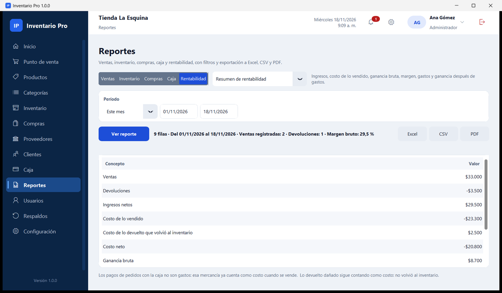
Las ventas se muestran netas de devoluciones. La ganancia resta el costo de lo vendido; los gastos de caja se restan aparte, y lo pagado por pedidos no se cuenta como gasto (ya es costo cuando se vende).
15. Copias de seguridad
Cada vez que se cierra el programa se hace una copia. Menú Respaldos:
- «Hacer copia ahora»: una copia en el equipo.
- «Guardar copia en…»: una copia completa (con las fotos) en una USB o un disco, con contraseña si quiere.
- Preferencias: cuántas copias se conservan, la copia al cerrar y una carpeta adicional (USB) donde también se guarda la copia al cerrar.
- Restaurar: elija la copia y pulse «Restaurar…». El programa la revisa, muestra qué tiene, guarda una copia del estado actual, se cierra, restaura y se abre solo.
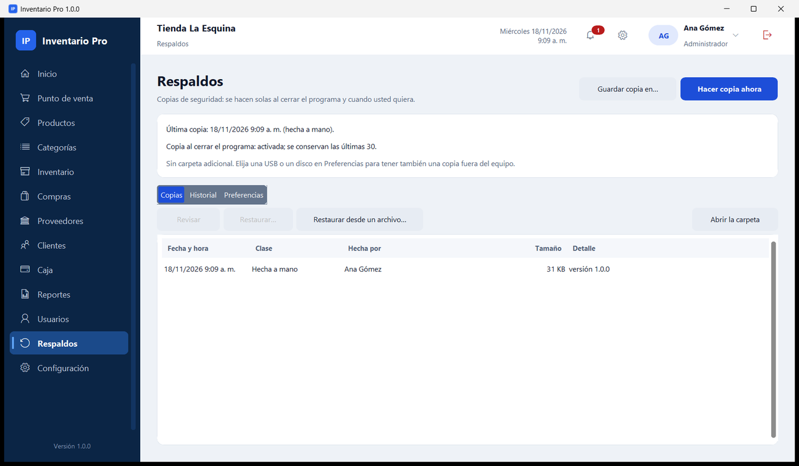
16. Usuarios y permisos
Menú Usuarios (solo el administrador). Hay cuatro roles: Administrador (todo), Supervisor (ventas, descuentos, ajustes, caja y reportes), Cajero (vender y su caja) y Encargado de inventario (productos, compras y existencias).
- «Nuevo usuario»: nombre, usuario, rol y contraseña inicial (la persona la cambia al entrar).
- Desbloquear, Restablecer contraseña y Desactivar sobre el usuario elegido.
- Permisos por rol: qué puede hacer cada rol.
- Registro de accesos: quién entró y cuándo, también los intentos fallidos.
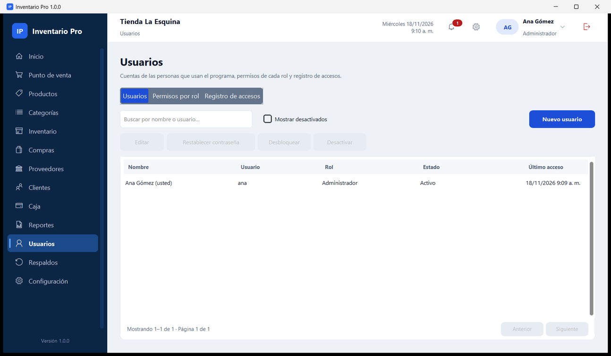
17. Configuración
- Tienda: nombre, razón social, NIT, dirección, teléfono y correo (salen en los recibos).
- Precios e impuestos: la ganancia por defecto, el redondeo del precio sugerido y las tarifas de impuesto.
- Ventas: medios de pago y cuentas de cobro (Nequi de cada persona), redondeo del total, encabezado y pie del recibo.
- Impresora y lector: la impresora de recibos (térmica de 58 u 80 mm o normal), si imprime sola al cobrar, el cajón monedero y la prueba del lector de códigos. «Imprimir página de prueba» comprueba que todo salga bien.
- Apariencia: modo claro u oscuro y tamaño de la letra.
- Seguridad: minutos para el bloqueo por inactividad e intentos de acceso permitidos.
- Licencia: el estado de la licencia y renovarla.
- Datos del software: la versión y la revisión del equipo.
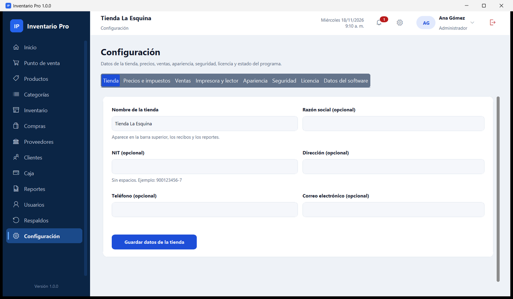
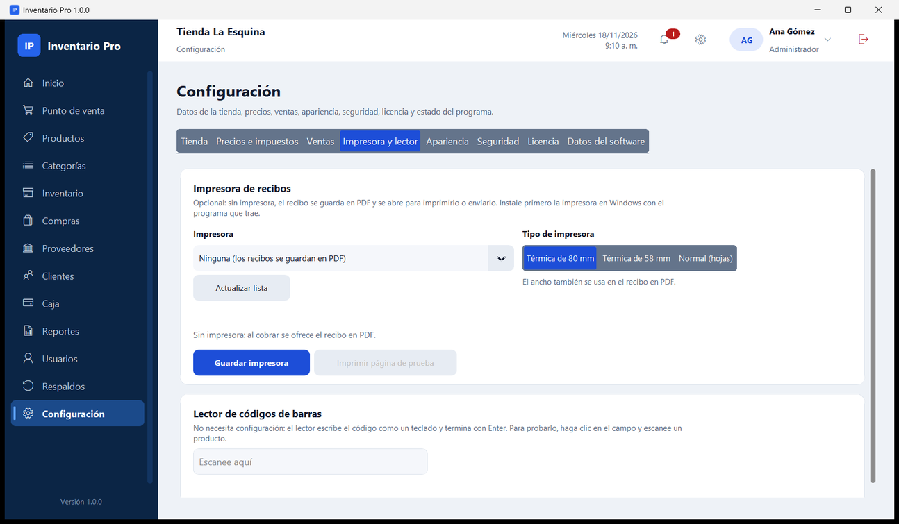
18. Actualizaciones
Si hay internet, el programa busca solo las versiones nuevas. Cuando hay una, avisa y la instala al cerrar el programa, después de la copia de seguridad. Al abrir la versión nueva muestra sus novedades. Una actualización que no está firmada por el distribuidor nunca se instala.
19. Teclas rápidas
| F2 | Punto de venta: ir al buscador |
|---|---|
| F12 | Punto de venta: cobrar |
| Supr | Punto de venta: quitar el producto elegido de la venta |
| Enter | Buscar, confirmar o pasar a la venta siguiente |
| Esc | Cerrar una ventana sin guardar |
20. Problemas frecuentes
| «La caja está cerrada» | Abra la caja en Caja → «Abrir caja». |
|---|---|
| «… está agotado» o «solo hay …» | No hay existencias suficientes. Revise el producto en Inventario o registre la compra. |
| El lector no agrega el producto | Pruébelo en Configuración → Impresora y lector. Si no termina con Enter, configure el lector con su manual. |
| La impresora no imprime | Revise que esté encendida, conectada y con papel; pruebe la página de prueba. La venta ya quedó registrada: puede imprimir el recibo después. |
| Olvidé mi contraseña | Otro administrador puede restablecerla en Usuarios. |
| Mi cuenta se bloqueó | Espere unos minutos o pida a un administrador que la desbloquee. |
| Cambié de computador | Instale el programa, pida una licencia para el equipo nuevo y restaure su última copia de seguridad (sección 15). |
| Al cerrar dice que no pudo hacer la copia | Pulse «Volver al programa», libere espacio en el disco y use «Hacer copia ahora». |